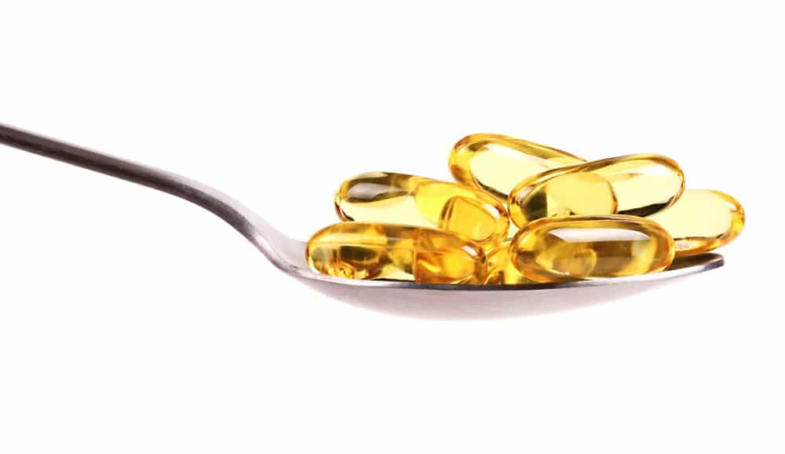
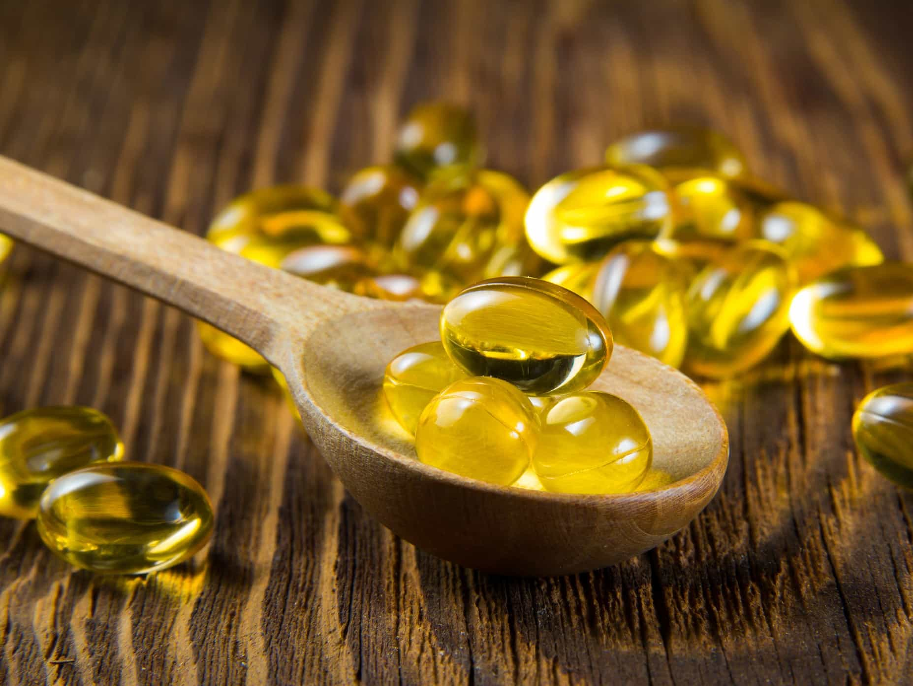
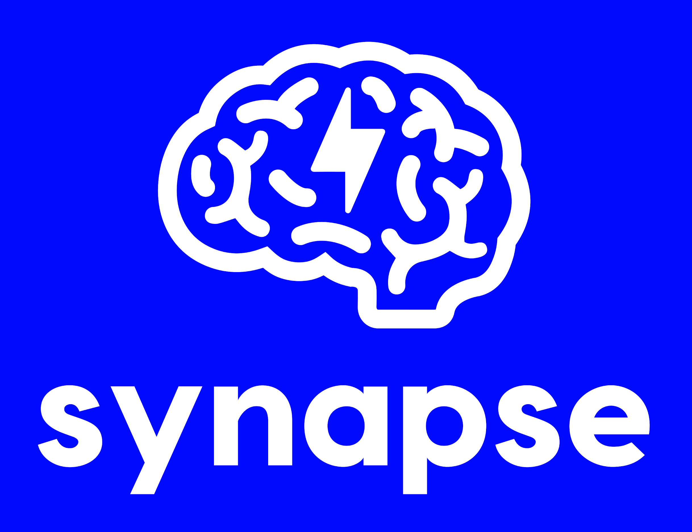

Sponsored Article is ROK's official account that publishes sponsored articles from advertisers. If you are interested hiring a sponsored article for your site, product, or service, visit our advertising page.


The following article is sponsored by Synapse Supplements.
As a man, you need to stay energized throughout the day in order to perform your best. Whether you’re in the office, in the gym, or on a date, maintaining your energy levels is vital for both your brain and your body. Fatigue can easily keep you from doing the things you need or want to do.
At the same time, you don’t want to rely on sugar-filled energy drinks and other high-calorie, junk food to yourself awake. Here are five ways you can easily keep your energy levels constant throughout the day…

While many people know coffee as a reliable way to boost energy levels, they don’t know that it has cognitive benefits beyond giving you a kick in the pants. Caffeine causes the creation of dopamine in the brain, which is how it provides energy, but coffee in particular can help burn fat, improve physical performance, and provide vital nutrients such as potassium and magnesium.
If that’s not enough, coffee has also been shown to aid in the prevention of Alzheimer’s disease, dementia, type 2 diabetes, and a number of other cognition-related disorders. In short, coffee is one of the best cognitive enhancers a man can use, and it’s also one of the easiest to get a hold of. Far from a bad habit, a morning cup of coffee will help keep your brain sharp and your energy levels high for years to come.

B vitamins provide the body with physical energy, enabling you to stay alert and perform strenuous activities for longer periods. B vitamin deficiencies have been linked to various physical and mental ailments; for example, a lack of folate can lead to birth defects such as spina bifida. Because of this, B vitamins are a vital part of any man’s diet.
While B vitamins can be obtained through supplements, many common foods and drinks also naturally contain them. For example, riboflavin (vitamin B2) and pantothenic acid (Vitamin B5) can be found in coffee, which is part of what makes it a useful drink. Vitamin B6 is plentiful in poultry, fish, and beans, while folate can be found in most fruits and vegetables.

Omega-3 and DHA (docosahexaenoic acid) are fatty acids that have been scientifically proven to be vital for brain health. Regular doses of these substances, either in supplement form or found in fish, help shore up cognitive function and reduce the likelihood of developing dementia and other degenerative disorders. However, omega-3 and DHA also have benefits to your energy levels.
When combined with uridine, omega-3 and DHA aid the brain in repairing dopamine receptors, providing more energy in your day-to-day life and enhancing the effect of dopamine-creating substances such as caffeine. Omega-3 and DHA also increase dopamine production when used in combination with uridine, providing even more of an energy boost. This is why Synapse gBoost includes uridine as part of its formula for enhanced cognition and energy.

Vitamin D3 is one of the most neglected vitamins when it comes to providing energy. Indeed, many people today don’t receive nearly enough of it due to the quirks of modern living. Scientific studies show that vitamin D3 deficiencies are linked with fatigue in humans, making it doubly important that you get more of this vital nutrient. Vitamin D3 is also necessary to maintain strong bones, important if you wish to lift or engage in physical activity.
While Vitamin D3 can be taken in supplement form as well as found in some foods, such as tuna, sardines, and fatty fish, the easiest way to get it is from sun exposure. The vast majority of humans take in vitamin D3 through exposure to the sun’s rays, and modern deficiencies in humans are linked to the greater amounts of time we spend indoors. If you want to improve your intake of Vitamin D3, the easiest way is to just take a walk every day if the sun is shining.

While these various supplements and nutrients will aid you when it comes to improving your cognitive health, you need to go the extra mile if you want to keep your energy levels up. Because of this, a cognitive stack consisting of quality nootropics and other supplements is mandatory if you want to stay at peak performance.
Synapse gBoost is one of the finest cognitive stacks available on the market today. Combining seven different natural ingredients into one handy product, gBoost is shown to enhance focus, memory, and mental energy in men. Among these ingredients are uridine (mentioned above) and CDP choline, which boost focus and motivation. gBoost also includes bacopa monnieri and gingko biloba, two ingredients that work to increase memory and learning.
In particular, Synapse gBoost users have reported up to twelve hours of intense focus per day when using the product, and they also experience massively improved memory and verbal fluency. gBoost has also been shown to improve users’ motivation, drive, and productivity, making it a fantastic addition to any man’s diet.
Keeping your energy levels up is a crucial part of living in our modern, fast-paced world. If you want to succeed at work, with women, or at whatever else you put your mind to, you need to be able to perform your best. A combination of dietary changes and a quality cognitive stack will enable you to dominate throughout the day and stay healthy. Click here to learn more about Synapse gBoost.